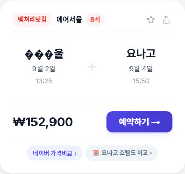
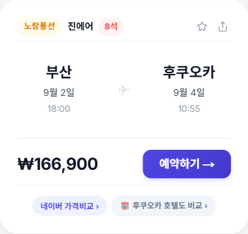
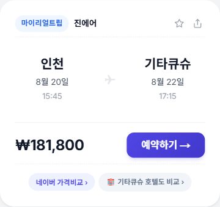
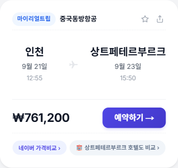
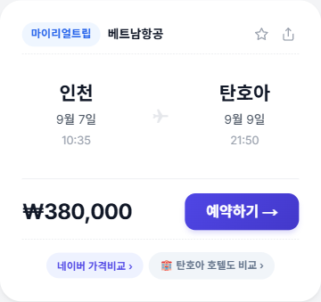

[8/12] 땡처리 항공권 특가 TOP 3 | 요나고 15만원, 마츠야마 16만원 ✈️
오늘의 특가, 가격 보고 깜짝 놀랐어요 😲
요나고 왕복 15만원대!
망설이면 놓칩니다.
🏆 8/12 추천 특가 TOP3
🥇 1위
���울 ↔ 요나고
에어서울 · 9/2(수)~9/4(금) · 2박 3일
152,900원

🥈 2위
인천 ↔ 마츠야마 (일본)
제주항공 · 8/30(일)~9/3(목) · 4박 5일
166,300원

도고 온천에서 3000년 역사의 힐링 ♨️
🥉 3위
부산 ↔ 후쿠오카 (일본)
진에어 · 9/2(수)~9/4(금) · 2박 3일
166,900원

캐널시티에서 쇼핑하고 🛍️
※ 유류할증료/텍스 포함 왕복 총액 기준
※ 좌석이 빠지면 가격이 바뀌거나 사라질 수 있어요.
💡 에디터 픽 : 2위 인천-마츠야마
사진: Unsplash
인천-마츠야마 왕복 166,300원!
제주항공 직항으로
4박 5일 알찬 일정입니다.
마츠야마성에서 시코쿠 풍경 한눈에 🏯
도고 상점가에서 감귤 디저트까지!
왕복 16만6,300원이면
온천+역사+맛집 풀코스.
📌 인천 출발은 뭐가 있을까?
이번 인천 출발 추천 라인업!

✈️ 기타큐슈 181,800원 (진에어)
8/20~8/22 · 2박 3일 일본 소도시 여행!

✈️ 상트페테르부르크 761,200원 (중국동방항공)
9/21~9/23 · 2박 3일 알찬 일정 가능!

✈️ 탄호아 380,000원 (베트남항공)
9/7~9/9 · 2박 3일 알찬 일정 가능!
✨ 이번 주 항공권 꿀팁
✈️ 지방 출발 TIP: 부산·청주·대구는 공항 접근성이 좋고 주차도 저렴해서 총비용이 더 싸요.
💡 좌석 TIP: 비상구 좌석은 사전 구매가 유료지만, 체크인 때 남아있으면 무료로 배정되기도 해요.
특가는 매일 바뀌니까,
출발 전에 한번 비교해보는 것도 좋아요.
내가 원하는 날짜에 더 싼 게 있을 수도! 😊
전국 여행사의 땡처리 항공권을 한눈에!
#땡처리항공권 #특가항공권 #항공권싸게사는법 #항공권최저가 #해외여행꿀팁 #티키티킷 #8월항공권 #8월해외여행 #요나고여행 #마츠야마여행 #후쿠오카여행